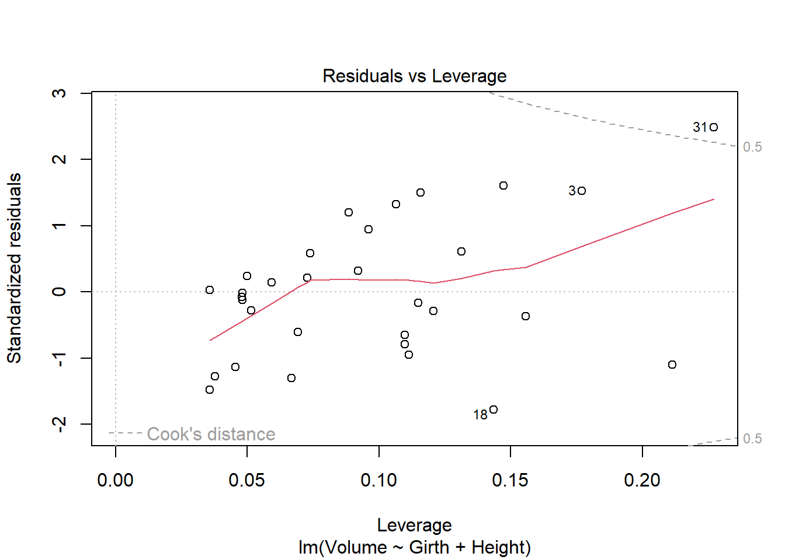

Homework 5 DACSS 603, Fall 2022 Due: December 9, 2022, 11.59pm
Please consult the relevant tutorials if you’re having trouble with coding the answers. Please write up your solutions as a .qmd (Quarto) document and publish in the Course Blog.
Some of the questions use data from the alr4 and smss R packages. You would need to install those packages in R (no need for an install.packages() call in your .qmd file, though—just use library()) and load the data using the data() function.
Question 1
(Data file: house.selling.price.2 from smss R package)
For the house.selling.price.2 data the tables below show a correlation matrix and a model fit using four predictors of selling price.
Hint 1: You should be able to answer A, B, C just using the tables below, although you should feel free to load the data in R and work with it if you so choose. They will be consistent with what you see on the tables.
Hint 2: The p-value of a variable in a simple linear regression is the same p-value one would get from a Pearson’s correlation (cor.test). The p-value is a function of the magnitude of the correlation coefficient (the higher the coefficient, the lower the p-value) and of sample size (larger samples lead to smaller p-values). For the correlations shown in the tables, they are between variables of the same length.)
With these four predictors,
1.1
For backward elimination, which variable would be deleted first? Why?
For backward elimination we remove the one with the largest p values which would be beds as its p value is .487.
1.2
For forward selection, which variable would be added first? Why?
For forward selection we add the ones with the lowest p-value which would be size or new. However, while they have the same p-value size has a higher correlation based on the tabes above I would add size first then add new followed by bath.
1.3
Why do you think that BEDS has such a large P-value in the multiple regression model, even though it has a substantial correlation with PRICE?
I believe this is not showing a sub .05 p-value because either the model is too complex and considering the other variables it throughs off the bed variable. This is also a fairly small sample size of ~90 so we can also say maybe there is not enough infomration to accurately describe this effect.
1.4
Using software with these four predictors, find the model that would be selected using each criterion:
R2 - Multiple linear regression model using lm function followed by summary. This will show the r-squared in the summary so it is really easy to find this information which is nice. Adjusted R2 - this will be the same as R2. This will show the adjusted r-squared for the regression in the summary so it is really easy to find this infomration. PRESS - utilizing the MPV package we can use the function press which simiply needs the linear model you used. This is much shorter than writing it all out and much easier. AIC - for this we can use the AIC function on the model that we have created before. BIC - for this we can use the BIC function on the model that we have created before.
Code
library(smss)library(MPV)
Error in library(MPV): there is no package called 'MPV'
Code
data("house.selling.price.2")mod1 <-lm(P ~ S + Be + Ba + New, data = house.selling.price.2)summary(mod1)
Call:
lm(formula = P ~ S + Be + Ba + New, data = house.selling.price.2)
Residuals:
Min 1Q Median 3Q Max
-36.212 -9.546 1.277 9.406 71.953
Coefficients:
Estimate Std. Error t value Pr(>|t|)
(Intercept) -41.795 12.104 -3.453 0.000855 ***
S 64.761 5.630 11.504 < 2e-16 ***
Be -2.766 3.960 -0.698 0.486763
Ba 19.203 5.650 3.399 0.001019 **
New 18.984 3.873 4.902 4.3e-06 ***
---
Signif. codes: 0 '***' 0.001 '**' 0.01 '*' 0.05 '.' 0.1 ' ' 1
Residual standard error: 16.36 on 88 degrees of freedom
Multiple R-squared: 0.8689, Adjusted R-squared: 0.8629
F-statistic: 145.8 on 4 and 88 DF, p-value: < 2.2e-16
Code
AIC(mod1)
[1] 790.6225
Code
BIC(mod1)
[1] 805.8181
Code
PRESS(mod1)
Error in PRESS(mod1): could not find function "PRESS"
Explain
Explain which model you prefer and why.
I usually go off the R2 for simple models as there is not too much to take into consideration but as it gets more complex I believe there are certain factors that need to be taken into consideration. When the equation gets more complex I would prefer using the AIC as it takes into consideration the other models this means that they are relative. This means that when one model gets to complex it can get penalized and not reflect a better score so this helps prevent over-complication of models.
Question 2
(Data file: trees from base R) From the documentation: “This data set provides measurements of the diameter, height and volume of timber in 31 felled black cherry trees. Note that the diameter (in inches) is erroneously labeled Girth in the data. It is measured at 4 ft 6 in above the ground.”
Tree volume estimation is a big deal, especially in the lumber industry. Use the trees data to build a basic model of tree volume prediction. In particular,
2.1
fit a multiple regression model with the Volume as the outcome and Girth and Height as the explanatory variables Run regression diagnostic plots on the model. Based on the plots, do you think any of the regression assumptions is violated?
After running the regression modeling and plotting to look at the data we can see there is definatly something wrong with this infomation and it seems to break the regression assumptions. It appears that linearity is a problem as the residuals vs fitted plot does not show a linear line and is very curved. This is due to the lack of constant variance resulting in the line being curved. The scale-location plot also looks like it has been violated as it is also not linear and shows a very strong dip then positive line.
Code
data("trees")tree <-lm(Volume ~ Girth + Height, data = trees)summary(tree)
Call:
lm(formula = Volume ~ Girth + Height, data = trees)
Residuals:
Min 1Q Median 3Q Max
-6.4065 -2.6493 -0.2876 2.2003 8.4847
Coefficients:
Estimate Std. Error t value Pr(>|t|)
(Intercept) -57.9877 8.6382 -6.713 2.75e-07 ***
Girth 4.7082 0.2643 17.816 < 2e-16 ***
Height 0.3393 0.1302 2.607 0.0145 *
---
Signif. codes: 0 '***' 0.001 '**' 0.01 '*' 0.05 '.' 0.1 ' ' 1
Residual standard error: 3.882 on 28 degrees of freedom
Multiple R-squared: 0.948, Adjusted R-squared: 0.9442
F-statistic: 255 on 2 and 28 DF, p-value: < 2.2e-16
Code
plot(tree)

Question 3
(Data file: florida in alr R package)
In the 2000 election for U.S. president, the counting of votes in Florida was controversial. In Palm Beach County in south Florida, for example, voters used a so-called butterfly ballot. Some believe that the layout of the ballot caused some voters to cast votes for Buchanan when their intended choice was Gore.
The data has variables for the number of votes for each candidate—Gore, Bush, and Buchanan.
Run a simple linear regression model where the Buchanan vote is the outcome and the Bush vote is the explanatory variable. Produce the regression diagnostic plots. Is Palm Beach County an outlier based on the diagnostic plots? Why or why not? Take the log of both variables (Bush vote and Buchanan Vote) and repeat the analysis in (a). Does your findings change?
Code
library(alr4)
Loading required package: car
Loading required package: carData
Loading required package: effects
lattice theme set by effectsTheme()
See ?effectsTheme for details.
Code
data("florida")Buchanan <-lm(Buchanan ~ Bush, data=florida)mod <-lm(log(Buchanan) ~log(Bush), data = florida)par(mfrow =c(2,3)); plot(Buchanan, which =1:6)
Code
par(mfrow =c(2,3)); plot(mod, which =1:6)
The first major thing that I see is that palm beach is a major outlier a probably the cause of these plots being interesting. Palm beach is way outside of the major group of points and this is causing the linear lines to be shifted and causing a less robust study to be done. When we use a double log on the linear model we notice that it corrects it a little bit but palm beach is still much higher than the other variables and is still resulting in it being an outlier.
Source Code
---title: "Homework 5"author: "Ethan Campbell"desription: "Homework 5"date: "12/8/2022"format: html: toc: true code-fold: true code-copy: true code-tools: truecategories: - hw4---Homework 5DACSS 603, Fall 2022Due: December 9, 2022, 11.59pmPlease consult the relevant tutorials if you’re having trouble with coding the answers. Please write up your solutions as a .qmd (Quarto) document and publish in the Course Blog.Some of the questions use data from the alr4 and smss R packages. You would need to install those packages in R (no need for an install.packages() call in your .qmd file, though—just use library()) and load the data using the data() function.# Question 1(Data file: house.selling.price.2 from smss R package)For the house.selling.price.2 data the tables below show a correlation matrix and a model fit using four predictors of selling price.Hint 1: You should be able to answer A, B, C just using the tables below, although you should feel free to load the data in R and work with it if you so choose. They will be consistent with what you see on the tables.Hint 2: The p-value of a variable in a simple linear regression is the same p-value one would get from a Pearson’s correlation (cor.test). The p-value is a function of the magnitude of the correlation coefficient (the higher the coefficient, the lower the p-value) and of sample size (larger samples lead to smaller p-values). For the correlations shown in the tables, they are between variables of the same length.)With these four predictors,## 1.1For backward elimination, which variable would be deleted first? Why?For backward elimination we remove the one with the largest p values which would be beds as its p value is .487.## 1.2For forward selection, which variable would be added first? Why?For forward selection we add the ones with the lowest p-value which would be size or new. However, while they have the same p-value size has a higher correlation based on the tabes above I would add size first then add new followed by bath.## 1.3Why do you think that BEDS has such a large P-value in the multiple regression model, even though it has a substantial correlation with PRICE?I believe this is not showing a sub .05 p-value because either the model is too complex and considering the other variables it throughs off the bed variable. This is also a fairly small sample size of ~90 so we can also say maybe there is not enough infomration to accurately describe this effect.## 1.4Using software with these four predictors, find the model that would be selected using each criterion:R2 - Multiple linear regression model using lm function followed by summary. This will show the r-squared in the summary so it is really easy to find this information which is nice.Adjusted R2 - this will be the same as R2. This will show the adjusted r-squared for the regression in the summary so it is really easy to find this infomration.PRESS - utilizing the MPV package we can use the function press which simiply needs the linear model you used. This is much shorter than writing it all out and much easier.AIC - for this we can use the AIC function on the model that we have created before.BIC - for this we can use the BIC function on the model that we have created before.```{r}library(smss)library(MPV)data("house.selling.price.2")mod1 <-lm(P ~ S + Be + Ba + New, data = house.selling.price.2)summary(mod1)AIC(mod1)BIC(mod1)PRESS(mod1)```### ExplainExplain which model you prefer and why.I usually go off the R2 for simple models as there is not too much to take into consideration but as it gets more complex I believe there are certain factors that need to be taken into consideration. When the equation gets more complex I would prefer using the AIC as it takes into consideration the other models this means that they are relative. This means that when one model gets to complex it can get penalized and not reflect a better score so this helps prevent over-complication of models.# Question 2(Data file: trees from base R)From the documentation:“This data set provides measurements of the diameter, height and volume of timber in 31 felled black cherry trees. Note that the diameter (in inches) is erroneously labeled Girth in the data. It is measured at 4 ft 6 in above the ground.”Tree volume estimation is a big deal, especially in the lumber industry. Use the trees data to build a basic model of tree volume prediction. In particular,## 2.1fit a multiple regression model with the Volume as the outcome and Girth and Height as the explanatory variablesRun regression diagnostic plots on the model. Based on the plots, do you think any of the regression assumptions is violated?After running the regression modeling and plotting to look at the data we can see there is definatly something wrong with this infomation and it seems to break the regression assumptions. It appears that linearity is a problem as the residuals vs fitted plot does not show a linear line and is very curved. This is due to the lack of constant variance resulting in the line being curved. The scale-location plot also looks like it has been violated as it is also not linear and shows a very strong dip then positive line.```{r}data("trees")tree <-lm(Volume ~ Girth + Height, data = trees)summary(tree)plot(tree)```# Question 3(Data file: florida in alr R package)In the 2000 election for U.S. president, the counting of votes in Florida was controversial. In Palm Beach County in south Florida, for example, voters used a so-called butterfly ballot. Some believe that the layout of the ballot caused some voters to cast votes for Buchanan when their intended choice was Gore.The data has variables for the number of votes for each candidate—Gore, Bush, and Buchanan.Run a simple linear regression model where the Buchanan vote is the outcome and the Bush vote is the explanatory variable. Produce the regression diagnostic plots. Is Palm Beach County an outlier based on the diagnostic plots? Why or why not?Take the log of both variables (Bush vote and Buchanan Vote) and repeat the analysis in (a). Does your findings change?```{r}library(alr4)data("florida")Buchanan <-lm(Buchanan ~ Bush, data=florida)mod <-lm(log(Buchanan) ~log(Bush), data = florida)par(mfrow =c(2,3)); plot(Buchanan, which =1:6)par(mfrow =c(2,3)); plot(mod, which =1:6)```The first major thing that I see is that palm beach is a major outlier a probably the cause of these plots being interesting. Palm beach is way outside of the major group of points and this is causing the linear lines to be shifted and causing a less robust study to be done. When we use a double log on the linear model we notice that it corrects it a little bit but palm beach is still much higher than the other variables and is still resulting in it being an outlier.